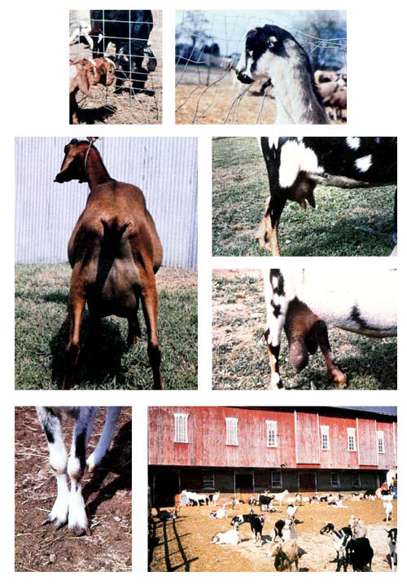

Raising Goats My Way (If I Could Do It Over Again) : Part I
July/August 1983
by Randy Kidd
MOM's vet takes dead aim at his own advice on goat keeping published in issue 65.
How often-especially when you're talking about livestock-have you heard the lament, "If I had it to do all over again, here's what I'd do"? I know I've listened to such statements more times than I can count! That's not surprising, though, because I've been in and out of the goat "business" several times . . . given numerous seminars and classes on the beasties (while listening to the comments, complaints, and questions of the goat keeping folks in attendance) . . . and-as a veterinarian -shared in the trials and tribulations of many local goat breeders.
Well, now it's my turn. Having been awarded a certified degree in goats by the school of hard knocks, I'm ready to stand before MOM's readers and recite my own mistakes . . . and how I'd correct them if I were starting with a clean slate. You should understand that in some instances my advice is a far cry from what I used to say a few years ago (my article "How to Raise Healthy Goats", in MOTHER NO. 65, page 74, is a case in point). And naturally, since we caprinekeepers do tend to be a strongly opinionated lot, not all goatherds will agree with all (or possibly any) of my revised counsel.
This piece will contain a collection of random tips on getting started . . . selecting and buying stock . . . and providing shelter for the herd. Part II will go into some other facets of taking care of these fascinating-and friendly small livestock. So lend an ear while I list what I'd do now.
FOR BEGINNERS
I used to tell novices to buy one goat (absolutely no more than two) . . . but now I think it's a better idea to start with five or six youngsters. Here's why: To my way of thinking, three (or maybe four) goats are a practical number for a person to milk twice a day. If I'm working any fewer than three animals, I've found that the time spent setting up to milk-cleaning utensils, hauling grain and hay, and so forth-really isn't economically used. On the other hand, if I've got five or more goats to milk, I'm plumb tuckered out by the time the task is finished.
With a starter herd of five or six doelings, I can select the three best producers of that first year to keep, and still have a couple of young does to sell . . . ladies that'll bring a premium because they're "in milk" and have their kids at their sides. I'll then keep the very best of my unsold female kids until the next year, to see how she turns out. If she look so as if she'll be a better milk maker than an animal I already own, I'll keep her. If not, I'll sell the doe to someone who is less critical than I am.
However, let me warn you that it's easy to become trapped in what I call the creeping spiral of goat inflation. "Goatflation" occurs, for instance, when an owner starts out with one or two critters, fully intending to limit the herd size to that number . . . but not realizing that the kids-when they come will be too dad burned cute to ever sell. Well, that kindhearted goatherd just naturally keeps the young'uns. The third year is a replay of the same scenario: The owner soon has eight to ten milking does, all too "valuable" to sell or cull. And so it goes, until the goat fancier has so many animals to take care of that he or she has time for little else!
The key here, then, is to decide how many goats you want to milk, and no matter what, to stick to that maximum number by selling every excess milker . . .especially the ones that don't measure up to your standards.
SHARING THE WEALTH
Now that I've decided on my perfect herd size and have sworn to keep absolutely no more than four milkers, I need to accomplish one more task before I start off on my buying spree: rounding up some folks who like goat's milk. If I had it to do all over again, I wouldn't get into the goat biz in the first place unless I had another family (or two or three) who wanted to share the milk with me. The problem with dairy goats, you understand, is that they're prolific producers. Just keeping one nanny will give you a gallon of milk per day . . . enough to leave most families simply awash in goat's milk.
Many goat people have spent a lot of time and effort devising ways to use all that excess liquid. Some owners have even tried selling their dairy products to friends or neighbors. At present, though, there are very few licensed commercial operations in the country that are financially successful at peddling goat's milk or other products . . . a fact that--sad but true should tell you there's a rather limited future in the sale of goat's milk.
So to my way of thinking, the best way to "market" your milk is to your own household and another family or two. Ideally, these other folks will be more than "customers" . . . they'll also be willing to take their turn at getting their farm-fresh milk right from the source. After all, I don't mind milking (for me, it's always been a quiet time for reflection, spent with my head resting against a goat's warm and contented belly) . . .but I do get tired of performing the ritual twice a day, every day of the week.
That's why I'd like to swap: My friends would get their milk free in exchange for milking my nannies once or twice a week, which would give me a nice break from my chores.
(I'd keep a pig or two around just in case there's still some extra milk. Even with several families sharing the proceeds, you're likely to have some left over . . . and young, growing hogs will thrive on the surplus.)
BUYING TIPS
If I had my druthers when it came time to pick a goat, I'd buy a youngster about four to six months of age. (Here's an instance where I've come at least I80° from my previous opinion. I used to recommend buying a two or three-year-old doe.) By this time, the doeling should have outgrown her gangly teenaged appearance, so-by looking at her body size and type-I can get a fairly good idea of what kind of producer she'll be. She should weigh 60 pounds or so, and be ready to breed that first fall. If she's too small (generally under 60 pounds) or too young, don't buy her.
I'd also look for an unbred doeling, because then I'd be able myself to select the buck to which she's to be bred. I don't want to be charged the buck's "breeding fee"-which is typically included in the price of an already mated doe-as the male would almost certainly be of lower quality than one I'd pick.
My second goat-shopping choice would be to head out in the spring and look for a promising kid. True, I'd know better what an alder animal was going to look like as an adult, but-for that very reason-the tyke should be less expensive.
In other words, with only rare exceptions, I would not shop for an adult doe now. Purchasing a full-fledged milk maker is too much like buying a used car: There's a good chance you'll end up with someone else's problems. (Plus you have to pay a lot more for a grownup than for a younger girl.) Bear in mind that most livestock owners rarely, if ever, get rid of their best and most trouble-free producers.
Furthermore, I'd buy only a registered doeling (an animal with American Dairy Goat Association-ADGA-papers), not a grade (unregistered) young goat. Of course, I'd expect to pay more initially for a purebred youngster, but I'll more than make up the difference when I'm able to sell her offspring . . . at registered prices.
I have no personal preference for any particular breed of goat . . . I like them all. However, I do think it's a good idea to buy the breed that's most common in your area. By sticking with the most popular variety, you'll find a receptive market for the offspring you'll be selling later on.
The grubstake needed to get started in this venture varies from region to region. Still, I'd say that $100 for a registered doeling should serve as a ballpark figure almost anywhere in the country. In Kansas, where I live, a registered doeling will bring from $75 to $150, depending on her and her parents' quality. In contrast, a proven doe fetches from $150 to $300. So you can easily see that you can buy two or three promising youngsters for the price of one oldster . . . which'll give you an odds-on chance of getting a fine producing herd from good stock fairly soon in your livestock-raising career.
NO EENY, MEENY, MINY, MO
I've said time and time again in my articles for MOTHER (and haven't revised my opinion in this matter) that the most important skill you can acquire when you're dealing with a food- or fiber-producing animal is the ability to select the best-quality specimen available. Being able to choose a fine dairy goat is especially important because-unlike a feeder pig or calf you'll butcher down the line-you'll be living with your decision (and her offspring) for many years to come. Of course, the best way to learn what a decent goat looks like is to attend some judgings at local goat shows or at a county fair. Spend enough time there looking at good examples until the image of an ideal goat is emblazoned upon your mind.
Once you've memorized your dream girl's physical attributes, you can pay attention to specific qualities that, I feel, are crucial.
First off, there's size . . . which is the most important characteristic in determining how much milk the animal will produce over her lifetime. The rule here is the bigger the frame, the better. Look for a long, tall doeling with a deep, widespread chest. The prospect's belly should look like the cross section of a barrel. However, be careful not to confuse size with heft . . . the creature under consideration should be big but refined, not coarse and thick-boned.
This lean, angular look is an elusive quality that livestock owners refer to as "dairy character". In general, the more of this trait that a beast carries on a large-sized body, the more milk she'll produce over her lifetime. Let me put it this way: If the doeling looks as if she could play linebacker for the Pittsburgh Steelers, she doesn't have dairy character.
If, on the other hand, the goat looks as if (perhaps with a little mascara and the proper clothes) she could grace the pages of .Seventeen magazine, then she's got dairy character. After I've determined that my prospective purchase is big and well formed, I look at her teeth and legs. To have a long and fruitful life, the doe will need to eat and to carry herself to the feeding trough . . . hence the need for structurally sound teeth and legs. The animal's lower incisors should touch squarely on the upper dental pad, not in front or behind it. Her legs should appear to drop straight down from her body when she's viewed from the front and the back, and her forward and rear "pinnings" should have the correct angle at the hock, hip, shoulder, and pasterns (according to that model of the picture-perfect dairy goat you've got indelibly etched on your memory).
In my unenlightened days, I used to tell livestock shoppers that the size of the udder was the most important part of the goat to evaluate. Now, I don't place as much emphasis on that organ's capacity as I do on some other characteristics that indicate a milk bag's ability to stay fit in the future.
A healthy udder will be firmly attached to a doe's belly by broad rear and fore ligaments. The milk "factory" should also be symmetrical and evenly divided from side to side, with a firmly attached median ligament. And its "handles" need to be properly shaped. Handsized teats, not huge or pendulous ones, make for easier milking, leave more room for the milk-producing part of the udder, and are less prone to mastitis. I also like to see teats with milk canals (the passages through which the liquid passes) that are large enough to allow milking with an easy, rhythmic squeezing of the fingers.
Admittedly, udder evaluation is a little difficult when you're sizing up a doeling that's never been milked. However, you can get a better idea of how that animal's udder will probably turn out by checking its mother's apparatus.
Actually, you should evaluate Mama (and Papa, too, if you can find him) all over if you have the opportunity. Once you've given a doe a thorough once-over, you'll have pretty good grounds for guessing how her babies will look when they grow up. Remember to pay special attention to Mama's size, her "undercarriage", her teeth, and her mammary system.
Even more important than a mother goat's appearance, though, are her milk-production records. How much milk does she yield annually, and how many kids does she usually have? Pay particular attention to the animal's length of lactation as well as to the overall pounds of liquid produced. You'll want a doe that's going to keep you in milk throughout her entire ten-month lactation spell, not one that pumps out a lot of liquid for four or five months and then dries right up!
HOME, SWEET HOME
Where to keep your newly acquired charges turns out to.be less complicated than many would-be goat owners want to believe. A simple three-sided shed that keeps out the wind and the rain and offers about 15 square feet of bedding space per adult goat is the best caprine shelter going. (Aim the open side of the shed to the south to catch the sun's warming and cleansing rays.) Unlike what most people suppose, enclosing a goat barn or adding heat to it increases the chance for bacteria to grow and flourish. Bacterial pneumonia, in fact, is quite prevalent among kids kept in stuffy barns. So the most desirable approach is to keep the shelter simple and draft-free, yet well ventilated.
Choosing the right kind of fencing for your goat pen is every bit as simple as selecting the right kind of shed. As far as I'm concerned (now), the only kind of fence for goats is one made out of commercially available stock panels. Previously, I recommended welded wire and electric fencing, but I've since changed my mind. Slippery caprine Houdinis can wig gle through welded wire fences and can squeeze under or through electric strands (some even learn how to time the pulses for a shock-free escape!).
In contrast, goats can lean or stand against stock panels without beating them down or pushing them over, and the sectioned bar ricades are tall enough to contain all but the most rambunctious breeding buck. The on ly thing I don't like about such fencing is its cost . . . about $20 per 16-foot panel. How ever, since nothing else quite does the job, I feel stock panels are worth the expense.
THERE'S MORE TO COME
Well, that's my list of caprine mea culpos for this time. In the next issue of MOTHER, I'll continue my litany of hints and revisions, covering such subjects as breeding, milking techniques, raising kids, feeds and feeding schedules, and at-home health care. So tune in and see how an old vet really can learn new tricks!
EDITORS NOTE: Revisions notwithstanding, Randy Kidd's original article in MOTHER NO. 65, `How to Raise Healthy Goats", is a thorough discussion of getting started with dairy goats. For directions on how to order back issues, turn to page 148.
In addition, here are some source books that goat owners (or would-be herders) might find valuable:
Raising Milk Goats the Modern Way by Ferry Belanger (Garden Way, $5.95). This paperback, which was written by the editor and publisher of Countryside magazine, covers the basics, discusses different breeds, and then don the i's on various aspects of successful goat keeping. It should be useful to beginner and old-timer alike.
Another helpful book-which, like Belanger's, takes the approach that goats are ideal for homy food production-is Raising Goats: The Back yard Dairy Alternative by David B. Weems (Tab, $12.95). This authoritative guide goes into depth on selecting, raising, caring for, milking, and breeding goats.
Finally, The Whole Goat Catalog edited By Linda S. Campbell (Gerard, $5.95) provides a quick reference to caprine supplies and service; addresses of pertinent government agencies, plus basic how-to herd-management practices. All of the above books are available for their lit prices plus $1.25 shipping and handling form one or two books, $2.00 for three or more itemsfrom Mother's Bookshelf , 105 Stoney Moun lain Road, Hendersonville, North Carolina 28791.
 CLOCKWISE FROM RIGHT: Stock panels last . . . . Welded wire fencing doesn't . . . . This healthy looking udder isn't large, but it's well-placed . . . . A case of mastitis waiting to happen and an armoring terror to milk . . . . The creeping inflation of goats . . . . This gal has got too-close front legs, arthritic-looking knees, and untrimmed hooves, to boot! . . . An excellent Nubian with good body capacity, almost perfect underpinnings, and a fairly capacious udder. |
 |
|